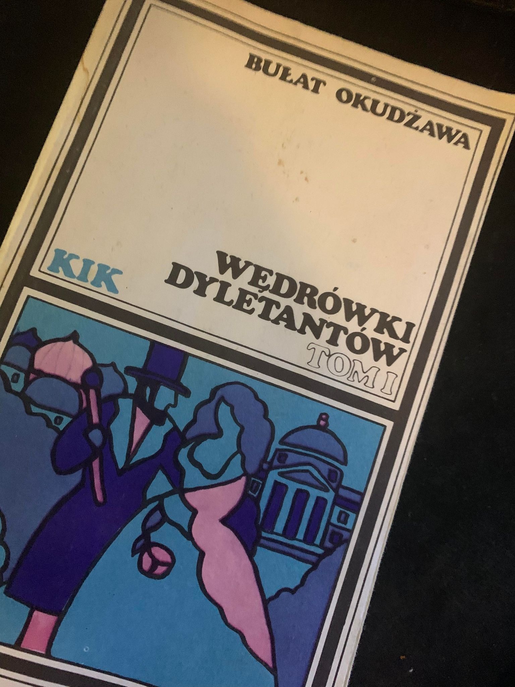
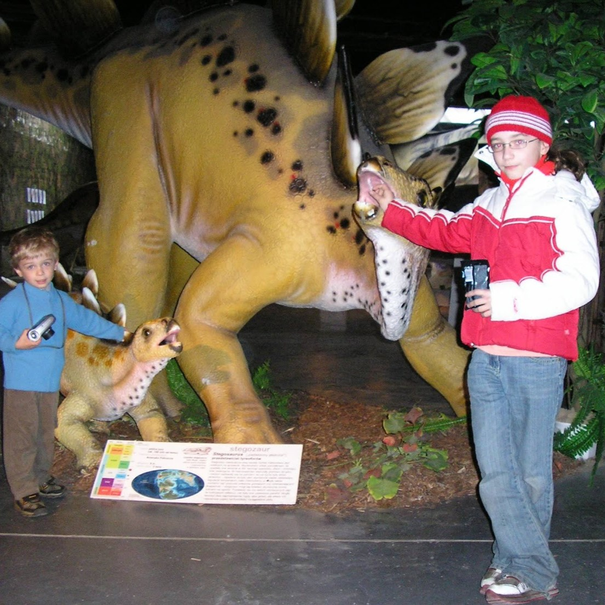
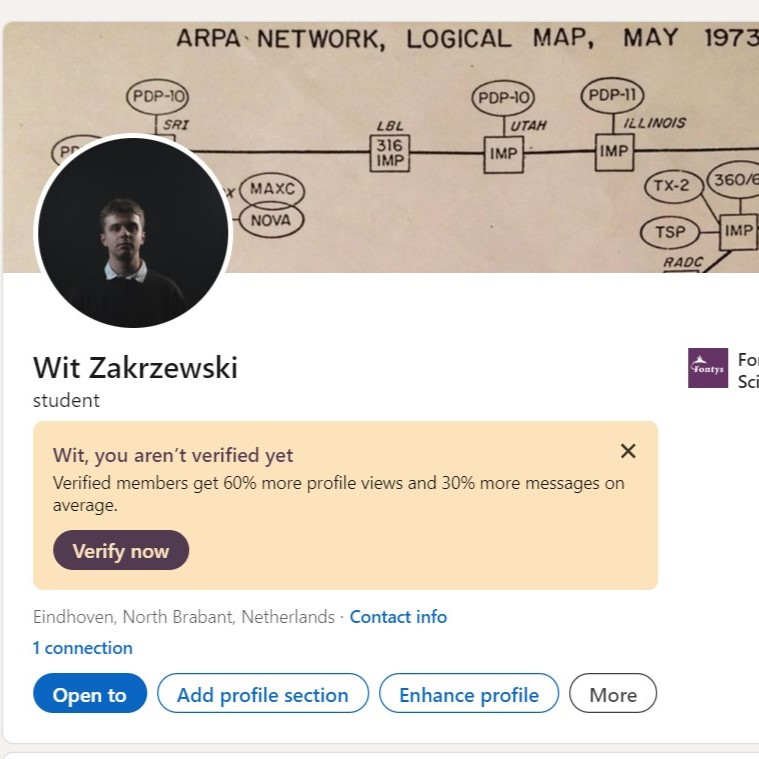

Work/Life balance
Throughout the semester, it's expected that students will expand their knowledge and skills through their work. However, it's equally important to take breaks,
clear your mind, and engage in your hobbies and interests. To me, maintaining a work/life balance is as important as my path to becoming a full-stack developer.
Without it, burnout becomes a real risk, which can negatively affect both your work and your relationships.
To clear my mind, I usually turn to a good book or movie, as I am an avid reader and a big fan of cinematography.
I also have a passion for learning history, so I often read historical documents and explore the past to uncover unknown events.
Additionally, spending time with loved ones is crucial, especially since IT work can be isolating.
It's important to stay connected with others and remember the value of social interactions.

Finding a Mentor
When developing in any field, finding a mentor is very important. While it might not be the easiest task,
I was lucky enough to have my sister as one. She is a full-stack developer herself and is always happy to lend a helping hand with the work I am doing.
I've learned a lot from her, and she is one of the reasons why I decided to choose the IT path. I can confidently say that it was a good decision.
Finding a mentor is crucial. Not everyone might be as fortunate as I am, but I highly recommend seeking one out.
You can learn a lot from their experience and skills, which can significantly enhance your own development.

Job Market
At the beginning of my enrollment at Fontys ICT, I opened a LinkedIn account. It wasn't initially intended to find an IT job immediately,
as I am still a beginner and recognize that clearly. Instead, it was to research job offers as my portfolio and skills grow.
I have been primarily researching Full-Stack Developer jobs and learned that they are in high demand, though the skill threshold is very high.
The tasks of a Full-Stack Developer are broad, combining the responsibilities of both software engineers and front-end developers.
However, I am confident that becoming one is within my reach, and I am motivated to achieve this goal.
